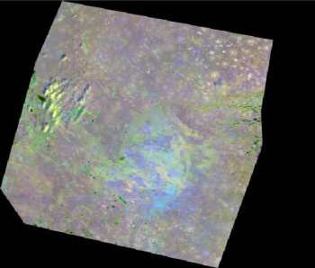
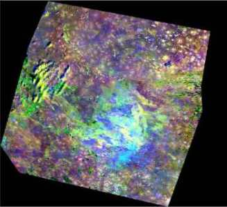
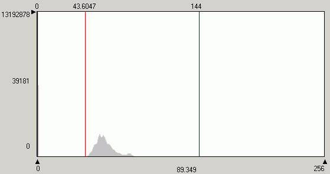
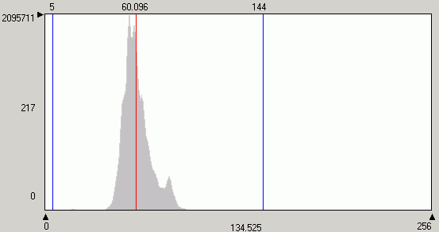
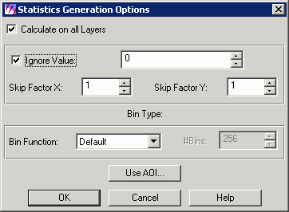

Небольшой факт, который может иметь сильное влияние на то как отображается изображение
При проведение любых операций над данными дистанционного зондирования Земли, важно при расчете статистики исключать нулевые значения, иначе визуально результаты могут оказаться заметно менее информативными чем они могли бы быть.
Слева и справа можно видеть одно и тоже изображение, сильно различающихся визуально в зависимости от того, были ли исключены нулевые значения при его создании или не были (изображение справа заметно контрастнее и несет больше тематический информации, которая может быть получена визуально, нулевые значения для этого изображения были исключены из статистики при его создании).
 |
 |
Различие гистограмм первого и второго изображения
Гистограмма первого канала изображения слева, максимальное значение 13.192.878 получается за счет включение большого количества нулевых значений находящихся за рамками "значимого поля" - черное поле "вокруг" снимка. За счет этого образуется отдельный пик, со значением 0 (слева на гистограмме, плохо виден) и количеством пикселей намного превышающем количества пикселей с другими (нормальными) значениями. Из-за этого, гистограмма определенным образом масштабируется.

Гистограмма первого канала изображения справа, максимальное значение 2.095.711 значительно меньше предыдущего потому что нулевые значения исключены при расчете статистики изображения и, следовательно, не участвуют в построении гистограммы - черное поле "вокруг" снимка все также присутствует, но уже не влияет на гистограмму и на процесс ее нормализации при визуализации изображения. Изображение становится более контрастным и информативным.

Если по той или иной причине, нулевые значения при расчете статистики исключены не были, это всегда можно сделать позднее. Например, с помощью ERDAS IMAGINE: Tools\Image Command Tool...\Compute Statistics...Options\Ignore Value...

Большинство программного обеспечения для работы с данными дистанционного зондирования, например ERDAS IMAGINE, Arcview Image Analysis и др., при расчете статистики со включенными нулевыми значениями будет автоматически пытаться оптимизировать гистограмму и выводить блеклое изображение независимо от того, включена ли опция прозрачность фона (устанавливающая прозрачными определенные значения) или нет.
Включение или не включение нулевых значений в расчет статистики может также сильно влиять на результаты других операций. Для примера, приведены eigenvalues и, соответственно, дисперсия, получившиеся при получении главных компонент на основе двух изображений приведенных выше.
"0" включены |
"0" исключены |
|||
|---|---|---|---|---|
|
Eigenvalues |
%Var |
Eigenvalues |
%Var |
PC1 |
9346.2 |
97.2 |
615.5 |
62.8 |
PC2 |
198.1 |
2.1 |
265.5 |
27.1 |
PC3 |
46.8 |
0.5 |
64.9 |
6.6 |
PC4 |
24.3 |
0.6 |
34.3 |
3.5 |
Дата создания: 10.11.2006
Автор(ы): Максим Дубинин